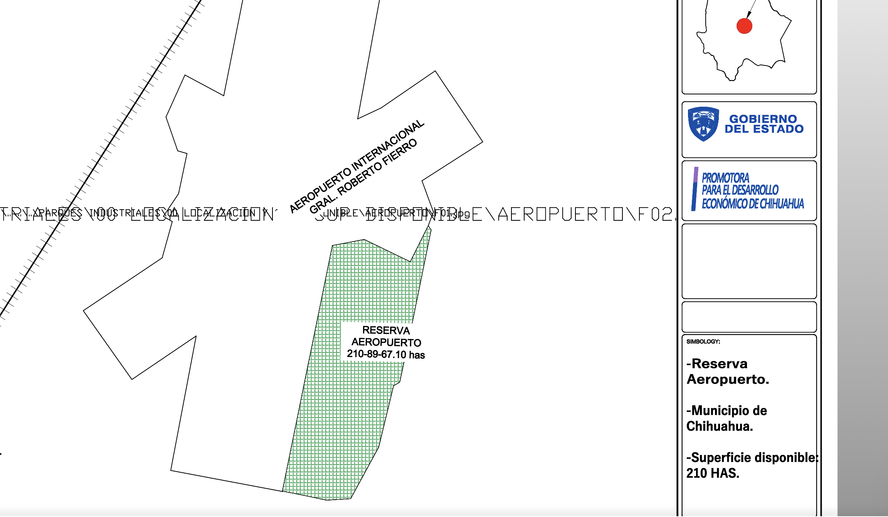

Reserva Aeropuerto Gral. Roberto Fierro · Chihuahua, Chih. · 210.9 ha
Selecciona una o varias fases para iluminar sus áreas en el mapa (se pueden combinar), o haz clic en cualquier instalación para ver su ficha técnica.
Cronograma estimado por fase. Haz clic en el estado de cada certificación para actualizarlo (se guarda en este dispositivo).
Renders del Mapa Maestro del Centro MRO CUU. Haz clic en una miniatura para ampliarla.
